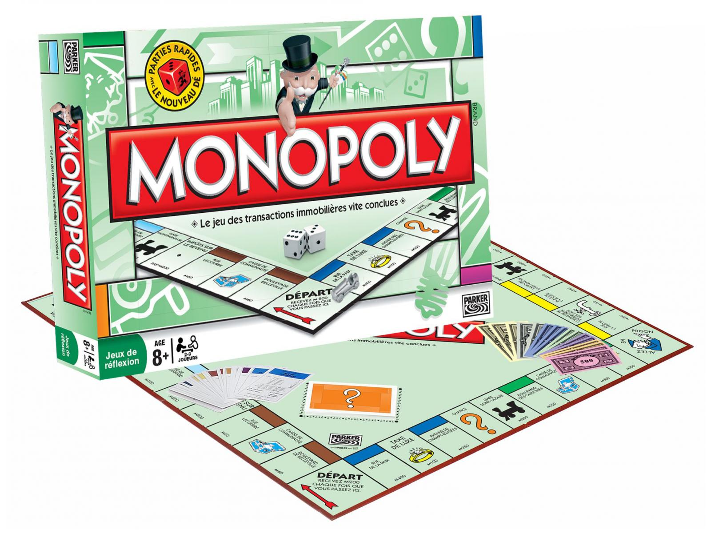

El juego de mesa más vendido de la historia
Antes
Un juego creado con la función de servir como herramienta para enseñar las teorías acerca de la justicia social y economica extraidas del estudio titulado Progreso y Miseria de Henry George

Monopoly
Comercializado por primera vez el año 1936
A lo largo de 80 años, el juego ha sufrido una notable evolución. Sus multiples versiones y sus tantas ediciones han dado pie a que se cambiara desde la caja que lo contiene hasta los elementos que lo componen, logrando asi, mantenerse entre los favoritos durante decadas.
Ahora
Con los años la finalidad del juego cambió para solo disfrutar un buen rato, negociando propiedades y hasta haciendo uso de medios electronicos para toda las transacciones que requiere el juego.
Con información de Grafica.info,cultura visual